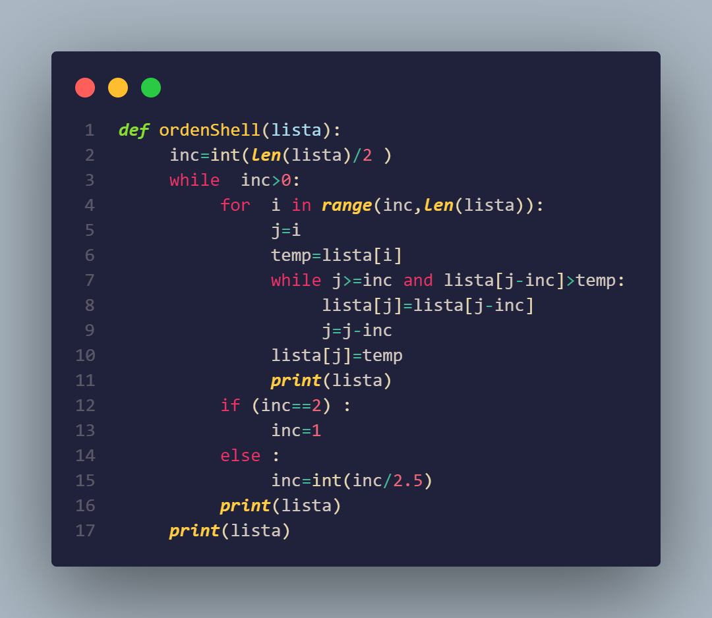

Ordenamiento Shell
Acerca de:
El ordenamiento Shell, también conocido como ordenamiento por inserción con brechas, es una variante del ordenamiento por inserción que mejora su eficiencia al reducir la cantidad de comparaciones y desplazamientos necesarios. Fue propuesto por Donald Shell en 1959 como una extensión del ordenamiento por inserción. En el ordenamiento Shell, se compara y se intercambia elementos que están separados por una brecha en lugar de comparar elementos adyacentes, lo que permite mover elementos más grandes a posiciones más rápidas.
Autor y año de creación:
El ordenamiento Shell fue propuesto por el ingeniero informático estadounidense Donald Shell en 1959. Shell desarrolló este algoritmo como una mejora del ordenamiento por inserción con el objetivo de reducir el tiempo de ejecución y mejorar la eficiencia del ordenamiento.
Duración:
La duración del ordenamiento Shell depende de la secuencia de brechas utilizada. La secuencia de brechas define las distancias entre los elementos que se comparan y se intercambian durante el proceso de ordenamiento. Las brechas más comunes utilizadas son la secuencia de Knuth o la secuencia de Ciura. En el peor caso, la complejidad temporal del ordenamiento Shell es O(n2), pero con una buena secuencia de brechas, puede alcanzar una complejidad de O(n log n). El rendimiento del ordenamiento Shell varía según la elección de la secuencia de brechas y el tamaño de la lista a ordenar.
Eficiencia:
El ordenamiento Shell es más eficiente que el ordenamiento por inserción para listas grandes. Aunque no es tan eficiente como otros algoritmos de ordenamiento de complejidad O(n log n), como el ordenamiento rápido o el ordenamiento de fusión, el ordenamiento Shell es una mejora significativa sobre el ordenamiento por inserción tradicional. La elección de la secuencia de brechas adecuada es importante para obtener un rendimiento óptimo. El ordenamiento Shell se utiliza en casos donde se requiere un ordenamiento moderadamente eficiente y el tamaño de la lista es lo suficientemente grande como para justificar el uso de una técnica de ordenamiento más sofisticada que el ordenamiento por inserción básico.
